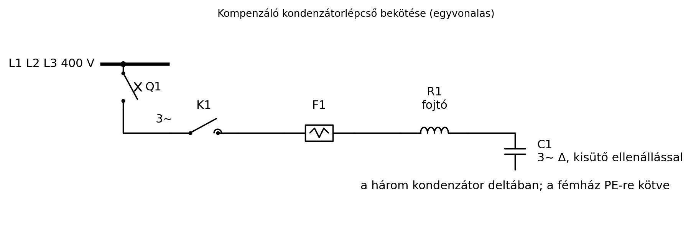

![(a) Háromlépcsős szabályozott fázisjavító telep – főkör - Többvonalas főkör alapállapotban. T1 áramváltó (S1/S2) az L1-ben, a telep leágazása ELŐTT: a fogyasztók és a telep együttes áramát méri. Q0 3P terheléskapcsoló → telep-gyűjtősín → három lépcső: F1/F2/F3 3P biztosító (gG/kondenzátorvédő, ellenőrizendő: gyártói ajánlás) → K1/K2/K3 kondenzátorkapcsoló kontaktor (előtöltő ellenállásos, korai segédérintkezőkkel) → C1/C2/C3 háromfázisú, delta-kapcsolású kondenzátor beépített kisütő ellenállással (mindhárom ágban; a rajz egyet mutat). Fojtott telepnél a K és a C közé R1–R3 fojtó kerül. A kondenzátorházak és a szekrény a PE-re csatlakoznak.](assets/ve131-diagram-2.png)
Egy ipari csarnokban a főelosztóban a lakatfogóval azt látod, hogy a motoros fogyasztók összárama jelentősen nagyobb, mint amit a hatásos teljesítményük indokolna. A hálózati mérőhelyen a meddőteljesítmény-számláló is forog, vagy a digitális fogyasztásmérő meddőenergia-értéket is rögzít. A megrendelő számlája nő, a vezetékek melegszenek, a feszültségesés a világítási körben már érezhető. A villanyszerelő feladata ilyenkor a teljesítménytényező megmérése és a fázisjavítás megtervezése, méretezése.
A meddőteljesítmény nem hoz létre hasznos munkát, mégis áramot keringet a vezetőkben. A fázisjavítás célja, hogy ezt a felesleges áramot helyben, az induktív fogyasztó közelében termelt meddő teljesítménnyel ellensúlyozzuk. A leggyakoribb megoldás a párhuzamosan kapcsolt kondenzátortelep, amely kapacitív meddőteljesítményt termel. A méretezés egy egyszerű trigonometrikus összefüggésre vezet vissza, de a kivitelezésnél a kondenzátorok védelmére, kisütésére és a hálózati rezonancia veszélyére is figyelni kell.
A fázisjavítás méretezésének alapja a teljesítmény-háromszög. Induktív jellegű fogyasztónál – például aszinkron motornál, transzformátornál, hagyományos fénycsöves világításnál – az áram késik a feszültséghez képest, ezért a hálózatból felvett látszólagos teljesítmény két összetevőre bontható:
A három mennyiség derékszögű háromszöget alkot:
{1}
{2}
A teljesítménytényező a hatásos és a látszólagos teljesítmény aránya (nem szinuszos áramnál és nem azonos; a megkülönböztetést és a fénycsöves világítási kör kompenzálásának esettanulmányát lásd: Teljesítmények és teljesítménytényező). Szinuszos áramnál:
{3}
Rossz teljesítménytényező esetén ugyanakkora hatásos teljesítményhez nagyobb áram tartozik, mert
{4}
Ezért a meddőteljesítmény növeli a vezetékek melegedését, a feszültségesést, a transzformátor és a kismegszakító terhelését, valamint a hálózati veszteségeket.
A fázisjavítást általában egy adott cél teljesítménytényező elérésére méretezzük, amelyet a hálózati engedélyes vagy az üzemeltetési szempontok határoznak meg. Magyarországon a közcélú elosztóhálózaton a kívánatos gyakran 0,9–0,95 közötti érték (ellenőrizendő: a helyi elosztói szabályzat pontos követelménye). A fázisjavító kondenzátortelepnek annyi meddőteljesítményt kell termelnie, hogy a fogyasztó által felvett meddőteljesítmény a régebbi értékről az új értékre csökkenjen.
Kiindulásként a hatásos teljesítmény a kompenzálás során változatlan marad. A kezdeti meddőteljesítmény:
{5}
ahol a kezdeti -hez tartozó tangens érték, és . A cél meddőteljesítmény:
{6}
ahol a cél -höz tartozó tangens. A kondenzátortelep szükséges meddőteljesítménye a két meddőteljesítmény különbsége:
{7}
Ez a fázisjavítás méretezésének alapképlete. A kompenzáló kondenzátor meddőteljesítményt ad le, tehát a hálózat felől nézve csökkenti a felvett meddőt.
Számítás. Folytassuk a fenti motorcsoport példáját. A kezdeti , ebből
Cél: , tehát
A szükséges kondenzátor meddőteljesítmény:
A motorcsoporthoz (csoportos vagy központi kompenzálással) tehát körülbelül 16,6 kvar névleges teljesítményű kondenzátortelepet kell választani. Ha egyetlen motor kapcsaira kötnénk (egyedi kompenzálás), a kondenzátor nem lehet nagyobb a motor üresjárási meddőjének kb. 90%-ánál (lásd lent), ezért ott kisebb egységet választunk, és a maradékot központi telep fedezi. A gyakorlatban a legközelebbi szabványos értéket, például 17,5 kvar-t (ellenőrizendő: a gyártó katalógusában elérhető lépcsőméret) alkalmazzuk.
A levezetés lényege: változatlan, ezért a meddő csak a változásával arányosan változik.
Megjegyzés. A érték helyett sok katalógusban táblázatos „k” szorzót adnak meg, amely a különbséget tartalmazza. A képlet azonban mindig a fenti alakú; a táblázat csupán a trigonometrikus számítás megkönnyítését szolgálja.
A kompenzáló kondenzátorokat háromféle módon lehet elhelyezni, a fogyasztó jellegétől és a hálózat topológiájától függően.
Egyedi kompenzálás. A kondenzátortelep közvetlenül az induktív fogyasztó – leggyakrabban motor – kapcsaihoz csatlakozik. Előnye, hogy a meddőteljesítményt éppen ott termeli, ahol keletkezik, ezért a motor és a kondenzátor közötti vezetékben nem folyik felesleges meddő áram. Hátránya, hogy minden motorhoz külön kondenzátor szükséges. A kondenzátor a motorral együtt kapcsol le, és a kifutó motor a kapcsaira kötött kondenzátorral öngerjesztett generátorként működhet: a lekapcsolt kapcsokon túlfeszültség jelenhet meg, ami érintési és szigetelési veszélyt jelent. Ezért egyedi kompenzálásnál a kondenzátor meddőteljesítményét a motor üresjárási meddőfelvétele alá méretezzük (jellemzően annak kb. 90%-ára) (ellenőrizendő: a motor- és a kondenzátorgyártó adata; a gyakorlatban gyakran a motor névleges meddőteljesítményének 25–40%-át választják). A méretezéshez a motor felvett hatásos teljesítményét () és a mért üresjárási meddőt használjuk, nem a tengelyteljesítményt.
Csoportos kompenzálás. Néhány, közös leágazáson lévő induktív fogyasztóhoz egyetlen kondenzátortelepet kapcsolunk. A meddőteljesítményt a csoport együttes igényére méretezzük, és a kondenzátortelepet a csoport elosztójában helyezzük el. Így a fővezetékben csökken a meddő áram, de a csoporton belüli egyes motor-vezetékekben még folyik.
Központi kompenzálás. A kondenzátortelep a főelosztóban vagy az alállomásban van, és a teljes üzemi fogyasztás meddőteljesítményét kompenzálja. Előnye, hogy egyetlen teleppel az egész üzem teljesítménytényezője javítható, és a telep jól felügyelhető. Hátránya, hogy a meddő áram a fogyasztók felé tovább folyik, tehát a belső hálózatot tovább terheli a meddő. Központi kompenzálásnál a telep általában több lépcsőből áll, és egy szabályozó a mindenkori meddőigényhez igazítja a bekapcsolt fokozatok számát.
Méretezési elv. A szükséges értéket mindig a mért vagy számított tényleges üzemi adatokból kell meghatározni. Egyetlen pillanatnyi mérés félrevezető lehet, mert a fogyasztók ki-be kapcsolása miatt a meddőigény időben változik. A gyakorlatban a méretezéshez a legnagyobb várható hatásos terhelést és a hozzá tartozó legrosszabb -t veszik figyelembe, vagy mérési jegyzőkönyvet készítenek egy jellemző üzemidőszakról.
A fázisjavító kondenzátortelep nem csupán egy kondenzátor, hanem egy kapcsoló- és védőelemekkel ellátott készülék. A telep fő részei:
Az alábbi ábra (a) része egy háromlépcsős telep szekrényét mutatja ajtó nélkül. Felül az 1 betáplálás és főszakaszoló, a 2 gyűjtősín és a 7 ventilátor; alatta lépcsőnként egy oszlopban a 3 túláramvédelem, a 4 kondenzátorkapcsoló mágneskapcsoló (K1–K3), az 5 kondenzátor (C1–C3) és legalul a nehéz, melegedő 6 fojtó (R1–R3). A 8 szabályozó az ajtón van; a 9 áramváltója a fő betáplálásban ül, a telep és a fogyasztók előtt, mert csak így látja az eredő meddő áramot. A (b) metszet egy hengeres egységet mutat: a 10 fémezett fóliás tekercs fölött a 11 túlnyomásos szakaszoló, a 12 kapcsok között a 13 kisütő ellenállások, a 14 ház fémes és földelt.
Tipikus szerelési hiba, hogy a szabályozó áramváltóját a telep leágazásába vagy egy fogyasztói leágazásba teszik: a szabályozó ilyenkor nem a hálózati, hanem egy részáramot lát, és rosszul kapcsol. A túlnyomásos szakaszoló megnyúlt fedele a kiégett egység jele; az ilyen egységet cserélni kell. A HTML-kiadásban a részekre mutatva azok szerepe olvasható.
Kapcsolási rajz (circuit diagram). Az alábbi egyszerűsített háromfázisú rajz egy kondenzátorlépcső bekötését mutatja.

Ábraértelmezés. A rajz a 400 V-os gyűjtősíntől balról jobbra haladva mutatja az energia útját: a kismegszakító védi a leágazást, a mágneskapcsoló végzi a be- és kikapcsolást, az hővédelem a túlterhelés ellen óv, az fojtó a harmonikus áramokat korlátozza, míg a háromfázisú, delta-kapcsolású kondenzátoregység termeli a meddőteljesítményt. A kisütő ellenállások a kondenzátorral párhuzamosan vannak beépítve, és a kikapcsolás után automatikusan kisütik a tárolt energiát.
A fenti rajz egyetlen lépcsőt mutat szabályozó nélkül. A villanyszerelő a teljes telepet köti be és üzemeli be, ezért az alábbi két rajz a szekrényábra jelöléseivel egy háromlépcsős, szabályozott telep főkörét és vezérlőkörét adja. Az (a) rajzon először keresd meg, honnan kapja a szabályozó a mérőáramot!
A (b) rajz a telep „agyát” mutatja: a szabályozó áram- és feszültségmérése alapján dönt, és a relékimenetein át kapcsolja a lépcső-kontaktorokat.
![(b) A telep vezérlőköre: A1 meddőteljesítmény-szabályozó - L → F4 (2 A) → A1 tápkapocs (L) és a relékimenetek közös kapcsa (C). Mérőfeszültség L2–L3-ról F5 biztosítón át (U1, U2); árambemenet k/l ← T1 S1/S2, az S2 (l) földelve. A mérőfeszültség és az áramváltó fázisa a szabályozó leírása szerint (hibás párosítás rossz fázisszöget ad). Áramváltó szekunderét üzem közben nyitni tilos: a sorkapocs rövidzáró hídjával zárd rövidre, mielőtt a szabályozót leválasztod. A1 relékimenetei: 1 → F1 jelzőérintkező → K1, 2 → K2, 3 → K3; R riasztási relé → H1. B1 termosztát → M1 szekrényventilátor. A kapocsjelek gyártófüggők (ellenőrizendő).](assets/ve131-diagram-3.png)
Működés és szerelési szabályok.
A fázisjavító kondenzátortelep megváltoztatja a hálózat frekvenciafüggő impedanciáját. A hálózatban mindig vannak induktív elemek (transzformátorok, motorok, kábelek reaktanciája) és kapacitív elemek (a kondenzátortelep). A kondenzátortelep és a hálózat (főként a transzformátor) induktivitása a harmonikus áramot termelő fogyasztók – frekvenciaváltók, kapcsolóüzemű tápegységek, ívhegesztők – felől nézve párhuzamos rezonanciakört alkot. A rezonanciafrekvencián a kör impedanciája nagyon nagy, ezért már kis harmonikus áram is nagy harmonikus feszültséget, a kondenzátor és a hálózat között pedig felerősödött köráramot okoz. (A soros rezonancia – a felső hálózat feszültség-harmonikusai a transzformátoron és a telepen át – a másik veszélyforma.) Ez túláramot, túlfeszültséget, a kondenzátorok és fojtók melegedését, valamint a védelmek indokolatlan kioldását okozhatja.
A rezonanciafrekvencia közelítően a hálózati zárlati teljesítmény és a kondenzátortelep teljesítményének arányából számítható:
{8}
ahol a párhuzamos rezonancia frekvenciája, a hálózati alapfrekvencia, a zárlati teljesítmény a kondenzátortelep csatlakozási pontján, pedig a telep névleges meddőteljesítménye (ellenőrizendő: a képlet pontos alakja és az alkalmazási feltételek a vonatkozó szabványban). Ha a rezonanciafrekvencia valamelyik jellemző harmonikus (pl. 5., 7., 11.) közelébe esik, a rendszer felerősíti az adott felharmonikust.
Számítás. Egy 630 kVA-es, -os transzformátor kapcsain a zárlati teljesítmény közelítően . Fojtatlan, -os telepnél , vagyis kb. a 10. harmonikus, a veszélyes 11. harmonikus (550 Hz) közelében. A hálózati előtét-impedanciát elhanyagoltuk, a számítás szemléltető (ellenőrizendő: a képlet alkalmazási feltételei).
A fojtótekercs ezt a rezonanciát hangolja el: soros induktivitást ad a kondenzátorhoz, így a rezonanciafrekvencia a kívánt harmonikus alá csökken. A fojtó és a kondenzátor soros rezonanciája , ahol a fojtási arány (a fojtó és a kondenzátor reaktanciájának hányadosa az alapharmonikuson). Például (7%-os fojtás) esetén , ami a 3. és 5. harmonikus közé esik (a 3,8-szoros alapfrekvencia), így az 5. harmonikus felül már nem rezonál (ellenőrizendő: a gyártó által megadott fojtási arány). A fojtatlan rendszer rezonanciafrekvenciája gyakran a 7. vagy 11. harmonikus közelébe esik, ami veszélyes.
Tilos fojtatlan kondenzátortelepet olyan hálózatra kapcsolni, ahol jelentős harmonikus áram van, anélkül hogy a rezonanciaviszonyokat ellenőriznénk. Ha a mérés szerint a hálózat feszültség-torzulása meghaladja a megengedett értéket, fojtott kompenzálást kell alkalmazni.
Valós eset. Egy üzemben a gyártósor frekvenciaváltós hajtásokkal bővült. A korábban jól működő, fojtás nélküli kondenzátortelep ezután egyre melegebb lett, és a lépcsők biztosítói időnként kioldottak. Mérés: a hálózatminőség-mérő a feszültség THD-jét és az 5., 7. harmonikus áramot növekedettnek mutatta; a (8) képlet szerinti rezonanciafrekvencia a 7. harmonikus közelébe esett. Tanulság: a rezonanciafrekvenciát (a (8) képlet szerint) a telep és a hálózat adja, és a 7. harmonikus közelében már a bővítés előtt is ott volt; a bővítés azt a harmonikus áramot hozta be, amely ezt a rezonanciát gerjeszti – nem a kondenzátor hibája. Megoldás: a telepet fojtott kivitelűre cserélték (a gyártói rendszerkönyv szerint, egységes fojtási aránnyal), majd a mérést megismételték (a tényleges értékek helyszíni mérésből származnak, itt szemléltetők).
1. Túlkompenzálás. Ha a kondenzátor teljesítménye nagyobb a szükségesnél, a rendszer kapacitívvá válik: a meddőteljesítmény előjelet vált, és a túlkompenzálás mértékével a (kapacitív) ismét romlik – például a 30 kW-os példán 40 kvar-ral kapacitív. Ez feszültségnövekedést okozhat, és a hálózati engedélyes is kifogásolhatja. Helyes gyakorlat: a telep méretezését pontosan kell elvégezni, és a bekapcsolt lépcsőket a mért érték alapján kell szabályozni.
2. A rezonancia figyelmen kívül hagyása. Fojtatlan kondenzátortelepet olyan hálózatra szerelnek, ahol frekvenciaváltók vagy más nemlineáris fogyasztók működnek. A kialakuló rezonancia túláramot és a kondenzátor tönkremenetelét okozza. Helyes gyakorlat: harmonikus mérés, rezonanciavizsgálat, szükség esetén fojtott kompenzálás.
3. A kisütés elhagyása. A kondenzátortelep lekapcsolása után a kondenzátorban töltés marad, amely érintésre veszélyes. Ha a kisütő ellenállás hiányzik vagy meghibásodott, a szerelő áramütést szenvedhet a karbantartás során. Helyes gyakorlat: mindig ellenőrizni kell a kisütő ellenállások meglétét és állapotát, és a beavatkozás előtt a kondenzátor feszültségét mérni kell.
4. Fojtó nélküli bővítés vagy rossz fojtási arány. Fojtott telephez fojtatlan lépcsőt kapcsolnak párhuzamosan, vagy eltérő fojtási arányú lépcsőket kevernek; a fojtatlan lépcső elhangolja a rendszert, és a rezonancia visszatér. Helyes gyakorlat: egy telepen belül azonos fojtási arány, a gyártói rendszerkönyv szerint.
A fejezethez tartozó interaktív kalkulátor segítségével kipróbálhatod a fázisjavítás méretezését: megadod a hatásos teljesítményt , a kezdeti -et és a cél -t, a kalkulátor pedig kiszámítja a szükséges meddőteljesítményt, valamint a háromfázisú delta-kapcsolású kondenzátortelep egyes fázisainak kapacitását. A kalkulátorban csúszkával állítod -t (1–200 kW), -et (0,5–0,95), -t (0,85–1,0) és a lépcsőméretet (2,5/5/10/12,5 kvar); kiírja -et, -t, -t, a szükséges lépcsőszámot, az elért -t, az áramcsökkenést és a kapacitást, és figyelmeztet a túlkompenzálásra. A statikus tartalék ábra a fejezet 30 kW-os példájának teljesítmény-háromszögét mutatja a kompenzálás előtt és után, valamint a katalógusok -szorzóját képletből számolva.

Ábraértelmezés. A kompenzálás előtti háromszögben kW a vízszintes oldal, kvar a függőleges oldal, kVA az átfogó. A kondenzátor meddője a csúcsából lefelé mutató kvar vektor, így a maradék meddő kvar, és az új látszólagos teljesítmény kVA rövidebb, mint ( → ). Az interaktív ábrán a és a lépcsőméret csúszkájával változtathatod a kompenzálás mértékét, és a háromszög folyamatosan frissül.
Gyakorlás: ennek az alfejezetnek a kidolgozott példái, gyakorlatai és megoldással ellátott feladatai az Összefoglaló feladatgyűjtemény villanyszerelő tanulóknak című kötet 36.1 szakaszában találhatók.
A fázisjavítás célja, hogy a fogyasztói berendezés teljesítménytényezőjét a lehető legkisebb beruházással és veszteséggel javítsuk. A kompenzáló kondenzátortelep szükséges meddőteljesítménye , ahol a hatásos teljesítmény, a kezdeti, a cél fázisszög. A kompenzálás lehet egyedi (a fogyasztó közvetlen közelében), csoportos vagy központi (a főelosztóban). A kondenzátortelep fő részei a kondenzátor, a fojtótekercs, a túláramvédelem, a kapcsolókészülék és a kisütő ellenállás. A fojtatlan kondenzátortelep rezonanciába kerülhet a hálózat induktivitásával, és a harmonikus áramokat felerősítheti; ezért harmonikus terhelésű hálózaton fojtott kompenzálást kell alkalmazni. A kisütő ellenállás a kondenzátorokban tárolt energiát lekapcsolás után biztonságos szintre csökkenti. A méretezésnél mindig a tényleges üzemi mérésből kell kiindulni, és kerülni kell a túlkompenzálást. Továbbvitt eredmény. A kompenzáló kondenzátortelep által szolgáltatott meddőteljesítmény, valamint a teljesítmény-háromszögek kezelése közvetlenül hasznosul a Szünetmentes áramforrások, aggregátorok és akkumulátorok alfejezetben, ahol a tartalék energiaforrásokból táplált fogyasztói hálózatok teljesítményviszonyait kell megérteni.
A szövegben hivatkozott szabványok: MSZ EN 60831 (kondenzátorok, ellenőrizendő), MSZ HD 60364 (szerelési szabályok), a hálózati engedélyes követelményei. A konkrét szabványszámok, a fojtási arányok, a rezonanciafrekvencia-képlet és a kisütési időhatár ellenőrzendők. A kitűzött számítási értékek szemléltető jellegűek, a tényleges méretezésnél mindig a hatályos szabvány és a gyártói adatlap a mérvadó.